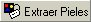
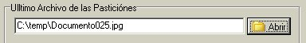
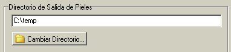

| Como
ya se había explicado en la sección de Partir, las
pieles son los archivos que nos sirven para ocultar los
archivos o particiones, es por eso que el método se llama
camuflaje. De tal modo que en muchas ocasiones estas pieles pueden
resultar atractivas y las queremos tener disponibles como archivos
individuales y no incrustada con otro archivo, es por eso que en
esta versión del kamaleon incluimos la forma de extraer las
pieles de los archivos camuflajeados.
Primeramente presiona el botón de
 ,
y nos aparecerá una caja para buscar el
Ultimo Archivo de las Particiones, como en la figura que se
muestra a continuación.

Damos en Abrir y buscamos ese archivo, esto
ya se explico detalladamente en la sección de Unir. Una vez
encontrado dicho archivo, que es el que contiene toda la información
necesaria de las particiones, presionamos el botón
,
y nos aparcera
otra caja donde elegiremos el Directorio de Salida de las
Pieles. En este directorio se almacenaran todas las pieles
diferentes que contengan los archivos camuflajeados de los cuales
se están extrayendo
.

Finalmente presionamos botón de ,
y el
programa grabara en el directorio especificado todas las pieles
que se extraigan.
|